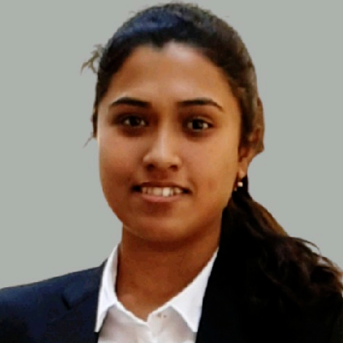

Prospective PhD Scholar |
 |
Krishna Nagar Nutan Palli |


Jenifar Das
 I am actively looking for open PhD positions. Please reach out if you are hiring and you feel that I might be a good fit for your research group.
I am actively looking for open PhD positions. Please reach out if you are hiring and you feel that I might be a good fit for your research group.
About
I am currently looking for open PhD positions in one of the broad areas of Bio Technology, Biochemical Engineering, and Food Technology. Previously, I was a Research Associate at the Cell Line Engineering (CLE) department of Enzene Biosciences Limited, where I worked on the production of biosimilar monoclonal antibody (mAb), with the SARS-CoV-2 virus, etc. Prior to that, I was a Medical Coder for the ICD-10-CM at Intelenet Global Services (now Teleperformance). Apart from that, I have explored Biomedical Engineering through an internship at Christian Medical College (CMC), where I designed and developed a prototype to detect minimal temperature fluctuations during the wound healing process. I have also explored Ichthyology/Fishery and Plant Tissue Culture through a couple of other internships.
Research Interests
Bio Technology : Molecular Biology, Microbiology, Cell Biology, Genetics.
Biochemical Engineering : Reactor Design, Upstream Process Technology, Fermentation Technology.
Food Technology : Biochemistry of Processing and Preservation, Food Microbiology, Food Fermentation Technology.
Research Experience
June 2020 - April 2021 : Research Associate, Enzene Biosciences Limited, Maharastra, India
Plasmid sequence confirmation of surface protein of SARS-CoV-2 virus
Plasmid extraction by ELISA technique
Production of biosimilar monoclonal antibody (mAb): transfection, upstream processing, and purification
2018 - 2020 : Graduate Student, IIT Varanasi, Uttar Pradesh, India
Isolation and characterisation of pigment producing bacteria from Arctic stone
January 2018 - March 2018 : Technical Trainee, Harvey Biomedical, Karnataka, India
Advance training in biomedical applications
2016 - 2017 : Undergraduate Student, NIT Agartala, Tripura, India
Optimisation of biofilm formation by Pseudomonas aeruginosa
June 2016 : Research Intern, Christian Medical College (CMC), Tamil Nadu, India
Temperature data logging to detect minimal fluctuations during wound healing
December 2015 : Research Intern, College of Fisheries, Tripura, India
Hands on training on PCR and DNA sequencing machines
May 2015 : Research Intern, Horticulture Research Complex, Tripura, India
Tissue culture of Musa acuminata
Education
2018 - 2020 : MTech in Biochemical Engineering at IIT Varanasi, Uttar Pradesh, India
2013 - 2017 : BTech in Bio Engineering at NIT Agartala, Tripura, India
Achievements
2018 - 2020 : GATE Fellowship for MTech by Ministry of Education, Government of India
2017 : Basic Medical Coding Certificate from Intelenet Training Academy, Chennai, Tamil Nadu, India
2012 : Certification on Computer Application from The Computer Point, New Delhi, India
2009 - 2010 : Best Cadet, North Eastern Region, in National Cadet Corps (NCC) by Ministry of Defence, Government of India
2009 : Certificate - A in National Cadet Corps (NCC) by Ministry of Defence, Government of India
Teaching Assistance
IIT Varanasi : Genetic Engineering - Fall 2019
IIT Varanasi : Biochemical Engineering Lab - Spring 2019, Fall 2018
Conferences and Workshops
Indo-US Conference on Bioengineering and Regenerative Medicine
Poster Presenter
IIT Varanasi, Uttar Pradesh, India, February 2020
GIAN Course on Nanomedicine: Applications, Challenges and Perspectives
Attendee
NIT Agartala, Tripura, India, March – April 2016
National Seminar on Recent Trends in Research, Development and Innovations in Chemical Industries
Attendee
NIT Agartala, Tripura, India, September 2014
Outside of Work
I am trained in Bharatanatyam form of the Indian classical dance. I also enjoy playing the guitar and reading political philosophy.